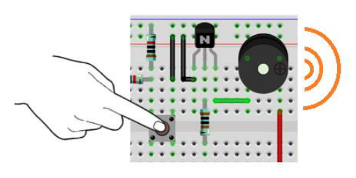

Chapter 6 Buzzer
In this chapter, we will learn about buzzers that can make sounds.
Project 6.1 Doorbell
We will make this kind of doorbell: when the button is pressed, the buzzer sounds; and when the button is released, the buzzer stops sounding.
Component List
Raspberry Pi Pico W x1
830 Tie-Points Breadboard x1
NPN transistor(S8050) x2
Active Buzzer x1
Resistor 10kΩ x2
Resistor 1kΩ x1
Button x1
Jumper Wire Several
Component knowledge
transistor
Buzzer
Connect

Code
In this project, a buzzer will be controlled by a push button switch. When the button switch is pressed, the buzzer sounds and when the button is released, the buzzer stops. It is analogous to our earlier project that controlled an LED ON and OFF.
Move the program folder “Super_Starter_Kit_for_ESP32_S3/Python/Python_C odes” to disk(D) in advance with the path of “D:/Micropython_Codes”.
Open “Thonny”, click “This computer” >> “D:” >> “Micropython_Codes” >> “06.1_Doorbe ll” and double click “Doorbell.py”.
06.1_Doorbell

Click “Run current script”, press the push button switch and the buzzer will sound. Release the push button switch and the buzzer will stop.
The following is the program code:
from machine import Pin
button=Pin(21,Pin.IN,Pin.PULL_UP)
activeBuzzer=Pin(14,Pin.OUT)
activeBuzzer.value(0)
while True:
if not button.value():
activeBuzzer.value(1)
else:
activeBuzzer.value(0)
Project 6.2 Alertor
Next, we will use a passive buzzer to make an alarm. Component list and the circuit is similar to the last section. In the Doorbell circuit only the active buzzer needs to be replaced with a passive buzzer.
Code
In this project, the buzzer alarm is controlled by the button. Press the button, then buzzer sounds. If you release the button, the buzzer will stop sounding.
In the logic, it is the same as using button to control LED. In the control method, passive buzzer requires PWM of certain frequency to sound.
Open “Thonny”, click “This computer” >> “D:” >> “Micropython_Codes” >> “06.2_Alerto r”，and double click “Alertor.py”.
06.2_Alertor

Click “Run current script”, press the button, then alarm sounds. And when the button is release, the alarm will stop sounding.
The following is the program code:
from machine import Pin,PWM
import math
import time
PI=3.14
button=Pin(21,Pin.IN,Pin.PULL_UP)
passiveBuzzer=PWM(Pin(14),2000)
def alert():
for x in range(0,36):
sinVal=math.sin(x*10*PI/180)
toneVal=2000+int(sinVal*500)
passiveBuzzer.freq(toneVal)
time.sleep_ms(10)
try:
while True:
if not button.value():
passiveBuzzer.init()
alert()
else:
passiveBuzzer.deinit()
except:
passiveBuzzer.deinit()